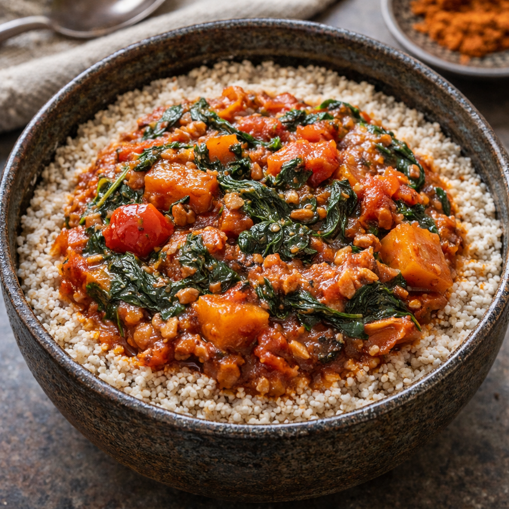
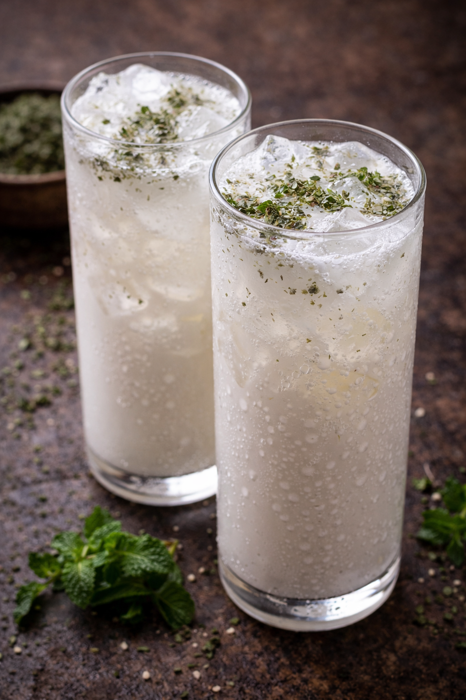

Culture · Serokav
Serokav — The Vaultrian Table
About Serokav
Serokav is the Vaultrian table: everyday meals, household traditions, and the dishes that keep bodies and neighbourhoods grounded. Browse the canon below — use filters to narrow by heat, line, or habit. Each dish opens on its own page for the full recipe and detail.
Dishes

Naratbowl
NARAT-SEROKAV · BODY FOOD
Open recipe →
Naratpilaf
NARAT-SEROKAV · BODY PILAF
Open recipe →
Naratel Broth
NARATEL-VALEK · SOUL WATER
Open recipe →
Zelek Flatbread
ZELEK-SEROKAV · PLACE BREAD
Open recipe →
Zelek Lavash
ZELEK-SEROKAV · PLACE BREAD
Open recipe →
Nod Skewer
NOD-TORAKAV · CITY FIRE
Open recipe →
Vatek Börek
VATEK-SEROKAV · PASTRY OF THE MACHINE
Open recipe →
Doogh
DOOGH-VALEK · LIVING WATER
Open recipe →
Narozi Brew
NAROZI-VALEK · IDEA WATER
Open recipe →
Varun Tea
VARUN-VALEK · FUTURE WATER
Open recipe →
Soko Brew
SOKO-VALEK · FOREST WATER
Open recipe →
Baklava Moravel
MORAVEL-SEROKAV · LOVE PASTRY
Open recipe →
Revani Cake
KALEMI-REVANI · JOY CAKE
Open recipe →
Kavira Plate
KAVIRA-SEROKAV · MORNING ANNOUNCE
Open recipe →
Kiratsavel Pilaf
KIRATSAVEL-LORUNAKAV · COVENANT GRAIN
Open recipe →
Sena Pot
SENA-TORAKAV · WE COOK
Open recipe →